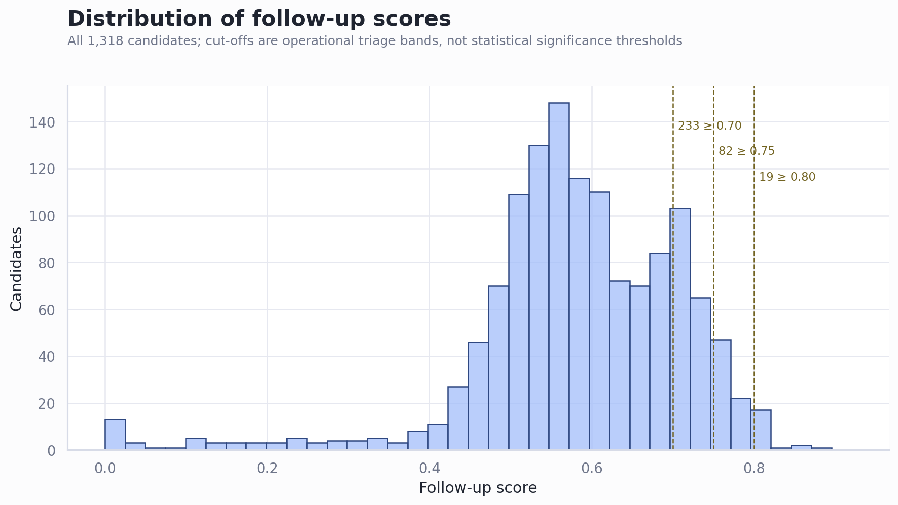
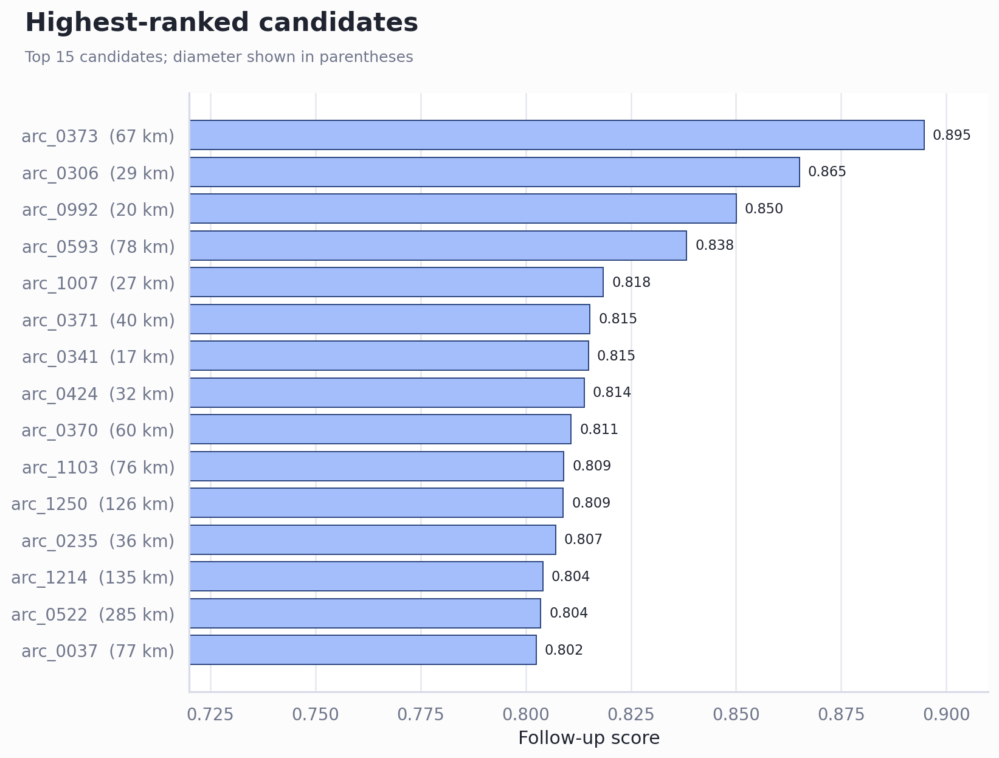

Review of the arcuate-geometry ranking
Full GEBCO and geological-boundary run · 1,318 visually identified geometries · reviewed June 20, 2026
Executive Summary
- The pipeline has produced a useful triage ranking, not a catalogue of impact structures. Nineteen candidates score at least 0.80, 82 at least 0.75, and 233 at least 0.70. These bands are convenient workload cut-offs; they are not calibrated probabilities or p-values.
- The highest scores primarily identify coherent circular topography. The score correlates most strongly with the composite topography term (Spearman ρ=0.85), annular peak percentile (0.79), and radius agreement (0.66). Geological independence is a weaker discriminator (0.22).
- At least one conspicuous high-ranking cluster has a known non-impact explanation. arc_0370 at 57.43°N, 11.12°W coincides with the circular volcanic Anton Dohrn Seamount; nearby leading candidates occupy the Rockall Trough seamount province. This is a valuable empirical false-positive control.
- The next defensible step is calibration. Imagery has not yet contributed to any score, and randomized spatial nulls, labelled positive controls, false-discovery rates, and morphology-specific endogenic controls have not yet been run.
A manageable high-priority tail emerges
The distribution is broad but concentrated around a median of 0.582. The 95th percentile is 0.759 and the 99th percentile 0.803. Reviewing the 82 candidates above 0.75 is therefore a practical first-pass workload; narrowing directly to the 19 above 0.80 risks overinterpreting arbitrary score precision.

The leaders are strong circular landforms—but not necessarily impacts
The top candidate, arc_0373, scores 0.895 at an inferred diameter of 67.2 km. arc_0370, also in the top ten, lies at the published centre of Anton Dohrn Seamount, described by the JNCC as an extinct volcano. The British Geological Survey identifies multiple volcanic centres in this same Rockall Basin region. This demonstrates that the detector is successfully finding real circular geomorphology while also admitting predictable volcanic false positives.

| Rank | Candidate | Centre | Diameter km | Score | Topo. | Geology |
|---|---|---|---|---|---|---|
| 1 | arc_0373 | 59.227, -10.048 | 67.2 | 0.895 | 0.865 | independent |
| 2 | arc_0306 | 18.773, 8.713 | 28.6 | 0.865 | 0.827 | independent |
| 3 | arc_0992 | -46.317, -69.455 | 20.0 | 0.850 | 0.808 | independent |
| 4 | arc_0593 | 64.935, -163.216 | 77.7 | 0.838 | 0.793 | independent |
| 5 | arc_1007 | -43.044, -69.453 | 27.4 | 0.818 | 0.767 | independent |
| 6 | arc_0371 | 56.471, -10.301 | 39.9 | 0.815 | 0.763 | independent |
| 7 | arc_0341 | 57.223, -2.746 | 17.4 | 0.815 | 0.763 | independent |
| 8 | arc_0424 | 39.120, 10.944 | 31.7 | 0.814 | 0.761 | independent |
| 9 | arc_0370 | 57.432, -11.120 | 60.2 | 0.811 | 0.757 | independent |
| 10 | arc_1103 | 56.104, -22.261 | 76.2 | 0.809 | 0.809 | 0.19 overlap |
| 11 | arc_1250 | 17.368, -80.145 | 126.1 | 0.809 | 0.755 | independent |
| 12 | arc_0235 | 43.252, -121.506 | 36.3 | 0.807 | 0.809 | 0.20 overlap |
| 13 | arc_1214 | -22.033, 178.524 | 134.7 | 0.804 | 0.749 | independent |
| 14 | arc_0522 | 64.891, 172.534 | 285.4 | 0.804 | 0.760 | 0.04 overlap |
| 15 | arc_0037 | -25.611, 23.276 | 76.8 | 0.802 | 0.747 | independent |
| 16 | arc_0308 | 18.930, 9.099 | 20.0 | 0.802 | 0.746 | independent |
| 17 | arc_1031 | -37.241, -65.345 | 24.6 | 0.802 | 0.746 | independent |
| 18 | arc_0404 | -11.177, -41.898 | 115.9 | 0.801 | 0.745 | independent |
| 19 | arc_0752 | 22.643, 160.913 | 373.2 | 0.800 | 0.744 | independent |
| 20 | arc_0605 | 64.200, -153.361 | 44.9 | 0.800 | 0.743 | independent |
The score is dominated by circularity evidence and resolution
The ranking formula uses 78% topographic evidence and 22% geological independence, then multiplies the result by data quality. Within the topographic term, annular peak location, angular continuity, radius agreement, centre agreement, radial alignment, and relief are combined. Consequently, correlations with the final score are descriptive of score construction—not independent scientific validation.

Geology has a modest effect: 643 candidates intersect mapped province boundaries, compared with 675 that do not. Their median scores are 0.560 and 0.603 respectively. 17 of the top 20 have zero mapped boundary coincidence, partly because full independence receives the complete 22% geology contribution.
Sub-10 km candidates cannot be judged fairly from this run
The 48 candidates below 10 km diameter have a median score of only 0.128, versus roughly 0.59–0.61 in the larger size bands. This is mainly a resolution and quality-gating effect, not evidence that small structures are intrinsically less plausible. In total, 95 candidates have data quality below one and eight are driven to zero.

Recommended Next Steps
- Deduplicate spatially before field prioritisation. Thirteen overlapping pairs occur within the top 100, including near-identical candidate pairs. Consolidate these into structure-level clusters so one landform cannot consume several review slots.
- Run empirical nulls before interpreting the upper tail. Randomly translate/rotate each arc within matched latitude, relief and land/ocean strata; use circularly shifted annuli and radius-scrambled controls; then report empirical p-values and false-discovery-rate adjusted q-values.
- Create labelled control sets. Include confirmed impacts as positives and volcanoes, calderas, seamounts, salt structures, tectonic basins, coastal embayments and bathymetric acquisition artefacts as explicit negatives. Anton Dohrn and the Rockall Trough seamounts should be mandatory controls.
- Add imagery and independent geophysics. Score cloud-controlled optical composites where meaningful, but use gravity, magnetics and higher-resolution DEM/bathymetry as stronger discriminants. Refit weights only after blinded labels exist.
- Review the top 82 in two stages. First eliminate known endogenic structures and data artefacts; then subject the surviving topography-independent candidates to detailed geological review.
Further Questions
- How many of the visually identified arcs were intentionally drawn around known impacts, volcanoes or other controls?
- Should very large candidates (hundreds to thousands of kilometres) be analysed separately from crater-scale structures?
- Are geological province boundaries the correct negative evidence, or should faults, lithological contacts and circular intrusions be represented independently?
- What minimum posterior evidence would justify inclusion in the manuscript: morphology alone, or morphology plus an independent geophysical anomaly?
Caveats and Assumptions
The ranking is provisional. It lacks imagery measurements, empirical null distributions and calibrated labels. The score’s decimals should not be read as measurement precision. GEBCO’s heterogeneous source coverage can also imprint survey artefacts, especially offshore. The current geological term rewards distance from broad province boundaries but does not test detailed local stratigraphy or structure. Finally, the visual-source geometries nearly all have complete angular coverage, so the run evaluates preselected near-circles rather than testing whether arbitrary natural linework is circular.